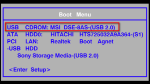
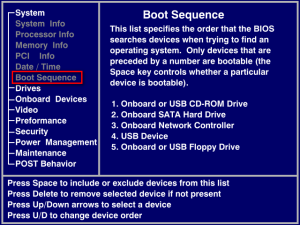
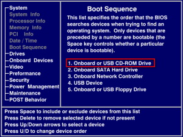

1-3 光碟片體驗(Live)
● 優點：
○ 無需安裝任何軟體、不影響原有電腦系統及資料。
○ 可播放多媒體聲音
○ 製作完成的作品及檔案，可儲存至硬碟或隨身碟。
● 缺點：
○ 需下載ISO檔，並燒錄成光碟
○ 需設定 BIOS 開機選項
○ 電腦等級不夠，操作上會不流暢
○ 無法安裝新的軟體
○ 無法儲存系統相關變更或設定
● 體驗方式：
○ 將 ezgo 光碟片放入電腦光碟機
○ 重新啟動電腦
■ 如果開機後還是進入 Windows ，表示你的電腦設定的開機順序是優先進入硬碟裡的 Windows，
那麼這時候再次重新啟動時，請特別留意要先〔選擇〕或〔設定〕您的電腦開機順序。
〔選擇〕：一般的電腦在開機後立即按 F10 或 F12 即可看到開機磁碟選擇的畫面，這時候選擇其中
有 DVD 的項目即可。
〔設定〕：一般的電腦在開機後立即按 F2 或 Delete 即可進入 BIOS 設定畫面，以設定您的電腦優
先以 DVD 光碟開機，這個部份的作法略為複雜，建議您可以請有 BIOS
設定經驗的朋友
協助您設定。
■ 以上作法若是都沒有成功，建議您可以請有 ezgo 或 Linux 使用經驗的朋友協助您。
● 選擇 CDROM 開機示範：
| 步驟 1：電腦開機後，立即按鍵盤 F10 或 F12， 進入開機選單，選擇『CDROM』, 按 『Enter』鍵進入開機程序。 |
步驟 2：進入開機畫面之後，在如下的畫面中 『啟用ezgo13』選項，按『Enter』鍵 進入系統。 |
|  |  |
| 步驟 3：靜候 1-3 分鐘即可進入 ezgo 系統，開始 體驗相關的應用 |
|
 |
● 設定 BIOS 示範： (註：每個機型的 BIOS 設定略有不同，建議可找關鍵字進行設定)
| 步驟 1：電腦開機後，立即按鍵盤 Delete 鍵， 進入 BIOS 開機選單並選擇『Boot Sequence』選項。 |
步驟 2：調整『Boot Seuqence』選項中的 『CD ROM』為開機第一優先順序， 儲存設定後並離開 。 |
|  |  |
| 步驟 3：重新開機後，即可看到如下畫面，在 『啟用ezgo13』選項，按『Enter』鍵 進入系統。 |
步驟 4：靜候 1-3 分鐘即可進入 ezgo 系統，開始 體驗相關的應用 |
|
|

{kind=link}
{kind=link}
{kind=link}